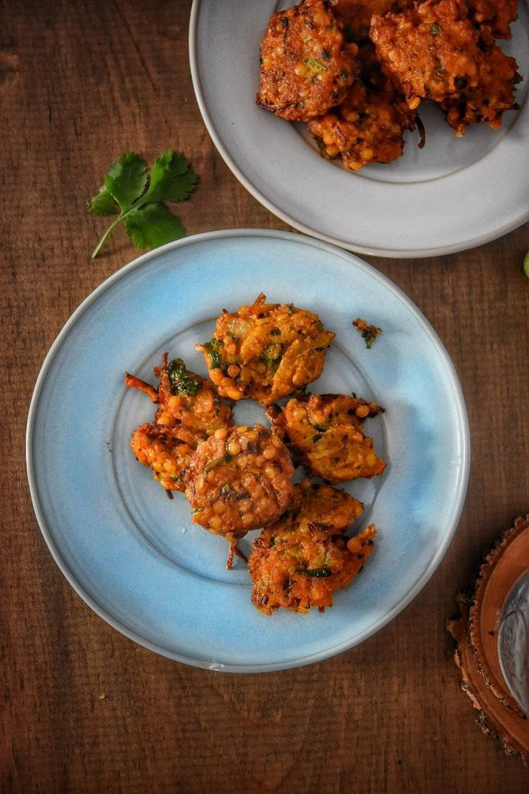

Piyaju

Ingredients:
- 1 cup red lentils (soaked and ground)
- 1 onion (chopped)
- 2 green chilies (chopped)
- 1 tsp cumin seeds
- Salt to taste
- Oil for frying
Instructions:
- Mix ground lentils with onions, chilies, cumin, and salt.
- Form small balls and flatten slightly.
- Deep fry until golden brown.
- Serve as a snack or with tea.
Back to Recipes